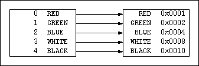

(Return to Data Types Interface (H5T).)
An HDF enumeration data type is a 1:1 mapping between a set of symbols and a set of integer values, and an order is imposed on the symbols by their integer values. The symbols are passed between the application and library as character strings and all the values for a particular enumeration type are of the same integer type, which is not necessarily a native type.
Creation of an enumeration data type resembles creation of a compound data type: first an empty enumeration type is created, then members are added to the type, then the type is optionally locked.
hid_t H5Tcreate(H5T_class_t type_class,
size_t size)
H5T_ENUM and the second argument is the
size in bytes of the native integer on which the enumeration
type is based. If the architecture does not support a native
signed integer of the specified size then an error is
returned.
/* Based on a native signed short */ hid_t hdf_en_colors = H5Tcreate(H5T_ENUM, sizeof(short));
hid_t H5Tenum_create(hid_t base)
H5Tcreate() function. This
function is useful when creating an enumeration type based on
some non-native integer data type, but it can be used for
native types as well.
/* Based on a native unsigned short */ hid_t hdf_en_colors_1 = H5Tenum_create(H5T_NATIVE_USHORT); /* Based on a MIPS 16-bit unsigned integer */ hid_t hdf_en_colors_2 = H5Tenum_create(H5T_MIPS_UINT16); /* Based on a big-endian 16-bit unsigned integer */ hid_t hdf_en_colors_3 = H5Tenum_create(H5T_STD_U16BE);
herr_t H5Tenum_insert(hid_t etype, const char
*symbol, void *value)
short val; H5Tenum_insert(hdf_en_colors, "RED", (val=0,&val)); H5Tenum_insert(hdf_en_colors, "GREEN", (val=1,&val)); H5Tenum_insert(hdf_en_colors, "BLUE", (val=2,&val)); H5Tenum_insert(hdf_en_colors, "WHITE", (val=3,&val)); H5Tenum_insert(hdf_en_colors, "BLACK", (val=4,&val));
herr_t H5Tlock(hid_t etype)
H5Tlock(hdf_en_colors);
Because an enumeration data type is derived from an integer data type, any operation which can be performed on integer data types can also be performed on enumeration data types. This includes:
H5Topen() |
H5Tcreate() |
H5Tcopy() |
H5Tclose() |
H5Tequal() |
H5Tlock() |
H5Tcommit() |
H5Tcommitted() |
H5Tget_class() |
H5Tget_size() |
H5Tget_order() |
H5Tget_pad() |
H5Tget_precision() |
H5Tget_offset() |
H5Tget_sign() |
H5Tset_size() |
H5Tset_order() |
H5Tset_precision() |
H5Tset_offset() |
H5Tset_pad() |
H5Tset_sign() |
In addition, the new function H5Tget_super() will
be defined for all data types that are derived from existing
types (currently just enumeration types).
hid_t H5Tget_super(hid_t type)
hid_t itype = H5Tget_super(hdf_en_colors); hid_t hdf_fr_colors = H5Tenum_create(itype); H5Tclose(itype); short val; H5Tenum_insert(hdf_fr_colors, "ouge", (val=0,&val)); H5Tenum_insert(hdf_fr_colors, "vert", (val=1,&val)); H5Tenum_insert(hdf_fr_colors, "bleu", (val=2,&val)); H5Tenum_insert(hdf_fr_colors, "blanc", (val=3,&val)); H5Tenum_insert(hdf_fr_colors, "noir", (val=4,&val)); H5Tlock(hdf_fr_colors);
A small set of functions is available for querying properties of an enumeration type. These functions are likely to be used by browsers to display data type information.
int H5Tget_nmembers(hid_t etype)
char *H5Tget_member_name(hid_t etype, unsigned
membno)
H5Tget_nmembers(). The members are stored in no
particular order. This function is already implemented for
compound data types. If an error occurs then the null pointer
is returned. The return value should be freed by calling
free().
herr_t H5Tget_member_value(hid_t etype, unsigned
membno, void *value/*out*/)
H5Tget_member_name()). The value returned
is in the domain of the underlying integer
data type which is often a native integer type. The
application should ensure that the memory pointed to by
value is large enough to contain the result (the size
can be obtained by calling H5Tget_size() on
either the enumeration type or the underlying integer type
when the type is not known by the C compiler.
int n = H5Tget_nmembers(hdf_en_colors);
unsigned u;
for (u=0; u<(unsigned)n; u++) {
char *symbol = H5Tget_member_name(hdf_en_colors, u);
short val;
H5Tget_member_value(hdf_en_colors, u, &val);
printf("#%u %20s = %d\n", u, symbol, val);
free(symbol);
}
Output:
#0 BLACK = 4 #1 BLUE = 2 #2 GREEN = 1 #3 RED = 0 #4 WHITE = 3
In addition to querying about the enumeration type properties, an application may want to make queries about enumerated data. These functions perform efficient mappings between symbol names and values.
herr_t H5Tenum_valueof(hid_t etype, const char
*symbol, void *value/*out*/)
herr_t H5Tenum_nameof(hid_t etype, void
*value, char *symbol, size_t
size)
short data[1000] = {4, 2, 0, 0, 5, 1, ...};
int i;
char symbol[32];
for (i=0; i<1000; i++) {
if (H5Tenum_nameof(hdf_en_colors, data+i, symbol,
sizeof symbol))<0) {
if (symbol[0]) {
strcpy(symbol+sizeof(symbol)-4, "...");
} else {
strcpy(symbol, "UNKNOWN");
}
}
printf("%d %s\n", data[i], symbol);
}
printf("}\n");
Output:
4 BLACK 2 BLUE 0 RED 0 RED 5 UNKNOWN 1 GREEN ...
Enumerated data can be converted from one type to another provided the destination enumeration type contains all the symbols of the source enumeration type. The conversion operates by matching up the symbol names of the source and destination enumeration types to build a mapping from source value to destination value. For instance, if we are translating from an enumeration type that defines a sequence of integers as the values for the colors to a type that defines a different bit for each color then the mapping might look like this:

That is, a source value of 2 which corresponds to
BLUE would be mapped to 0x0004. The
following code snippet builds the second data type, then
converts a raw data array from one data type to another, and
then prints the result.
/* Create a new enumeration type */
short val;
hid_t bits = H5Tcreate(H5T_ENUM, sizeof val);
H5Tenum_insert(bits, "RED", (val=0x0001,&val));
H5Tenum_insert(bits, "GREEN", (val=0x0002,&val));
H5Tenum_insert(bits, "BLUE", (val=0x0004,&val));
H5Tenum_insert(bits, "WHITE", (val=0x0008,&val));
H5Tenum_insert(bits, "BLACK", (val=0x0010,&val));
/* The data */
short data[6] = {1, 4, 2, 0, 3, 5};
/* Convert the data from one type to another */
H5Tconvert(hdf_en_colors, bits, 5, data, NULL);
/* Print the data */
for (i=0; i<6; i++) {
printf("0x%04x\n", (unsigned)(data[i]));
}
Output:
0x0002 0x0010 0x0004 0x0001 0x0008 0xffff
If the source data stream contains values which are not in the
domain of the conversion map then an overflow exception is
raised within the library, causing the application defined
overflow handler to be invoked (see
H5Tset_overflow()). If no overflow handler is
defined then all bits of the destination value will be set.
The HDF library will not provide conversions between enumerated data and integers although the application is free to do so (this is a policy we apply to all classes of HDF data types). However, since enumeration types are derived from integer types it is permissible to treat enumerated data as integers and perform integer conversions in that context.
Symbol order is determined by the integer values associated
with each symbol. When the integer data type is a native type,
testing the relative order of two symbols is an easy process:
simply compare the values of the symbols. If only the symbol
names are available then the values must first be determined by
calling H5Tenum_valueof().
short val1, val2; H5Tenum_valueof(hdf_en_colors, "WHITE", &val1); H5Tenum_valueof(hdf_en_colors, "BLACK", &val2); if (val1 < val2) ...
When the underlying integer data type is not a native type then
the easiest way to compare symbols is to first create a similar
enumeration type that contains all the same symbols but has a
native integer type (HDF type conversion features can be used to
convert the non-native values to native values). Once we have a
native type we can compare symbol order as just described. If
foreign is some non-native enumeration type then a
native type can be created as follows:
int n = H5Tget_nmembers(foreign);
hid_t itype = H5Tget_super(foreign);
void *val = malloc(n * MAX(H5Tget_size(itype), sizeof(int)));
char *name = malloc(n * sizeof(char*));
unsigned u;
/* Get foreign type information */
for (u=0; u<(unsigned)n; u++) {
name[u] = H5Tget_member_name(foreign, u);
H5Tget_member_value(foreign, u,
(char*)val+u*H5Tget_size(foreign));
}
/* Convert integer values to new type */
H5Tconvert(itype, H5T_NATIVE_INT, n, val, NULL);
/* Build a native type */
hid_t native = H5Tenum_create(H5T_NATIVE_INT);
for (i=0; i<n; i++) {
H5Tenum_insert(native, name[i], ((int*)val)[i]);
free(name[i]);
}
free(name);
free(val);
It is also possible to convert enumerated data to a new type
that has a different order defined for the symbols. For
instance, we can define a new type, reverse that
defines the same five colors but in the reverse order.
short val;
int i;
char sym[8];
short data[5] = {0, 1, 2, 3, 4};
hid_t reverse = H5Tenum_create(H5T_NATIVE_SHORT);
H5Tenum_insert(reverse, "BLACK", (val=0,&val));
H5Tenum_insert(reverse, "WHITE", (val=1,&val));
H5Tenum_insert(reverse, "BLUE", (val=2,&val));
H5Tenum_insert(reverse, "GREEN", (val=3,&val));
H5Tenum_insert(reverse, "RED", (val=4,&val));
/* Print data */
for (i=0; i<5; i++) {
H5Tenum_nameof(hdf_en_colors, data+i, sym, sizeof sym);
printf ("%d %s\n", data[i], sym);
}
puts("Converting...");
H5Tconvert(hdf_en_colors, reverse, 5, data, NULL);
/* Print data */
for (i=0; i<5; i++) {
H5Tenum_nameof(reverse, data+i, sym, sizeof sym);
printf ("%d %s\n", data[i], sym);
}
Output:
0 RED 1 GREEN 2 BLUE 3 WHITE 4 BLACK Converting... 4 RED 3 GREEN 2 BLUE 1 WHITE 0 BLACK
The order that members are inserted into an enumeration type is
unimportant; the important part is the associations between the
symbol names and the values. Thus, two enumeration data types
will be considered equal if and only if both types have the same
symbol/value associations and both have equal underlying integer
data types. Type equality is tested with the
H5Tequal() function.
enum Type
Although HDF enumeration data types are similar to C
enum data types, there are some important
differences:
| Difference | Motivation/Implications |
|---|---|
| Symbols are unquoted in C but quoted in HDF. | This allows the application to manipulate symbol names in ways that are not possible with C. |
| The C compiler automatically replaces all symbols with their integer values but HDF requires explicit calls to do the same. | C resolves symbols at compile time while HDF resolves symbols at run time. |
| The mapping from symbols to integers is N:1 in C but 1:1 in HDF. | HDF can translate from value to name
uniquely and large switch statements are
not necessary to print values in human-readable
format. |
A symbol must appear in only one C
enum type but may appear in multiple HDF
enumeration types. |
The translation from symbol to value in HDF requires the data type to be specified while in C the data type is not necessary because it can be inferred from the symbol. |
| The underlying integer value is always a native integer in C but can be a foreign integer type in HDF. | This allows HDF to describe data that might reside on a foreign architecture, such as data stored in a file. |
| The sign and size of the underlying integer data type is chosen automatically by the C compiler but must be fully specified with HDF. | Since HDF doesn't require finalization of a data type, complete specification of the type must be supplied before the type is used. Requiring that information at the time of type creation was a design decision to simplify the library. |
The examples below use the following C data types:
|
An HDF enumeration data type can be created from a C
enum type simply by passing pointers to the C
enum values to H5Tenum_insert(). For
instance, to create HDF types for the c_en_colors
type shown above:
|
Occassionally two applicatons wish to exchange data but they
use different names for the constants they exchange. For
instance, an English and a Spanish program may want to
communicate color names although they use different symbols in
the C enum definitions. The communication is still
possible although the applications must agree on common terms
for the colors. The following example shows the Spanish code to
read the values assuming that the applications have agreed that
the color information will be exchanged using Enlish color
names:
|
Since symbol ordering is completely determined by the integer values
assigned to each symbol in the enum definition,
ordering of enum symbols cannot be preserved across
files like with HDF enumeration types. HDF can convert from one
application's integer values to the other's so a symbol in one
application's C enum gets mapped to the same symbol
in the other application's C enum, but the relative
order of the symbols is not preserved.
For example, an application may be defined to use the
definition of c_en_colors defined above where
WHITE is less than BLACK, but some
other application might define the colors in some other
order. If each application defines an HDF enumeration type based
on that application's C enum type then HDF will
modify the integer values as data is communicated from one
application to the other so that a RED value
in the first application is also a RED value in the
other application.
A case of this reordering of symbol names was also shown in the
previous code snippet (as well as a change of language), where
HDF changed the integer values so 0 (RED) in the
input file became 4 (ROJO) in the data
array. In the input file, WHITE was less than
BLACK; in the application the opposite is true.
In fact, the ability to change the order of symbols is often convenient when the enumeration type is used only to group related symbols that don't have any well defined order relationship.
The HDF enumeration type conversion features can also be used
to provide internationalization of debugging output. A program
written with the c_en_colors data type could define
a separate HDF data type for languages such as English, Spanish,
and French and cast the enumerated value to one of these HDF
types to print the result.
|
The main goal of enumeration types is to provide communication of enumerated data using symbolic equivalence. That is, a symbol written to a dataset by one application should be read as the same symbol by some other application.
| Architecture Independence | Two applications shall be able to exchange enumerated data even when the underlying integer values have different storage formats. HDF accomplishes this for enumeration types by building them upon integer types. |
| Preservation of Order Relationship | The relative order of symbols shall be preserved between two applications that use equivalent enumeration data types. Unlike numeric values that have an implicit ordering, enumerated data has an explicit order defined by the enumeration data type and HDF records this order in the file. |
| Order Independence | An application shall be able to change the relative ordering of the symbols in an enumeration data type. This is accomplished by defining a new type with different integer values and converting data from one type to the other. |
| Subsets | An application shall be able to read enumerated data from an archived dataset even after the application has defined additional members for the enumeration type. An application shall be able to write to a dataset when the dataset contains a superset of the members defined by the application. Similar rules apply for in-core conversions between enumerated data types. |
| Targetable | An application shall be able to target a particular architecture or application when storing enumerated data. This is accomplished by allowing non-native underlying integer types and converting the native data to non-native data. |
| Efficient Data Transfer | An application that defines a file dataset that corresponds to some native C enumerated data array shall be able to read and write to that dataset directly using only Posix read and write functions. HDF already optimizes this case for integers, so the same optimization will apply to enumerated data. |
| Efficient Storage | Enumerated data shall be stored in a manner which is space efficient. HDF stores the enumerated data as integers and allows the application to chose the size and format of those integers. |
(Return to Data Types Interface (H5T).)
|
Introduction to HDF5 HDF5 Reference Manual Other HDF5 documents and links |
And in this document, the
HDF5 User's Guide:
Files
Datasets Data Types Dataspaces Groups References Attributes Property Lists Error Handling Filters Caching Chunking Debugging Environment DDL Ragged Arrays |